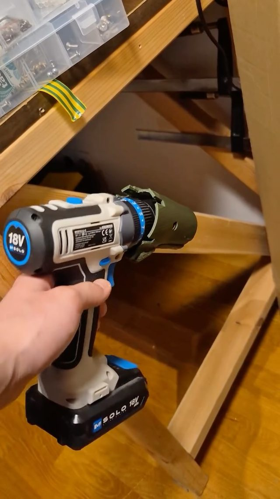
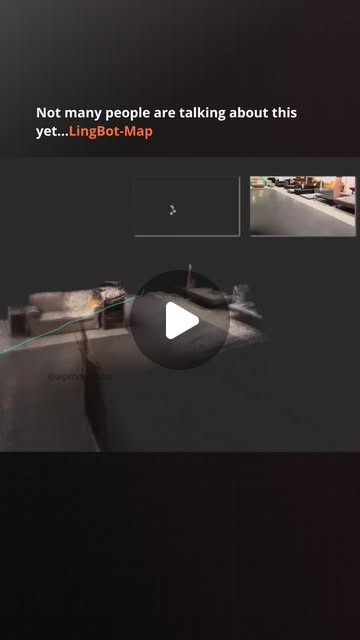
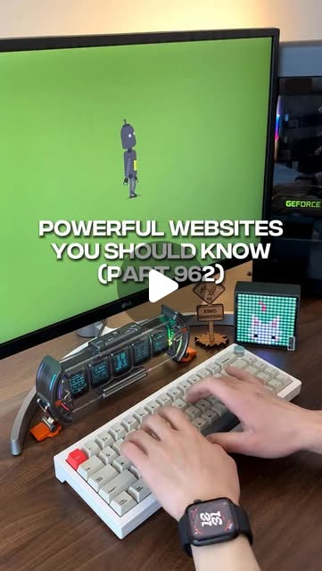

Scan, Fit, Print — agents that design parts around real objects
Try It — Action Sketch
Scan three awkward real objects (a tool handle, a bike mount point, a phone in its case) with the Orbiter workflow or photogrammetry; export clean meshes. Have Claude Code write a CadQuery/FreeCAD script that imports the mesh, fits planes/cylinders to the contact surfaces, and builds a mount with a stated clearance (e.g. 0.3 mm); prompt it to build its own CLI for the slicer. Print, test fit, feed caliper measurements back as corrections; log iterations-to-fit for agent vs your hand CAD. Falsifier: if agent CAD needs more print iterations than your own hand CAD on 3 of 3 objects, the scan-to-parametric step isn't ready — the fitting step, not the scanner, is the bottleneck.
Connected Posts (9)








Prompt system — run this yourself
Pasteable into Claude Code, Claude, or any agent. One-shot for the whole result, step prompts when you want to steer. Every step carries its own audit; the gap audit makes the agent find and fill what it missed.
Mission. Produces a scan-to-parametric-CAD pipeline in which a coding agent takes a mesh of a real object (from the Orbiter smartphone rig, photogrammetry, or a Raspberry Pi LiDAR handheld), fits geometric primitives to the contact surfaces, writes a CadQuery script for a mount with a stated clearance, slices it through a CLI the agent builds itself, and logs iterations-to-fit against the maker's own hand CAD on three objects. Done means three printed parts with caliper-verified fit, a measured scan error budget, and a falsifier verdict on whether agent CAD needs fewer print iterations than hand CAD.
1 · Deeper, not bigger
- What a top professional would do (that you didn't ask for): A mechanical design engineer would start with an error budget, not a scan: scanner accuracy, mesh-to-primitive fitting error, printer dimensional error, and the clearance they want, each measured. They would print a clearance test coupon first (holes and pegs at 0.1 to 0.5 mm steps) so the agent's '0.3 mm clearance' means something on this printer and filament. They would fit primitives with RANSAC and report residuals per surface, keep the CAD fully parametric with dimensions named, and verify the scan against calipers on at least three features before trusting it. They would also design for printing: orientation, overhangs, wall thickness, and where to split.
- Rawest material to start from: The Orbiter repo and build docs from Raw Mechatronics; the Peppa Cam build plan (wiring, code and CAD); the LingBot-Map repository from Ant Group's Robbyant team for video-to-3D; the FreeCAD source and docs at github.com/FreeCAD/FreeCAD; CadQuery and build123d docs; PrusaSlicer or OrcaSlicer command-line references; the Y-Pan and Gemma Translator STL and bill-of-materials releases as reference for shipping a device as files. Your own raw data: the photo set or point cloud, caliper readings of the object, and the clearance coupon measurements.
- Methods and tools: Capture: Orbiter rig or a turntable photo set processed in COLMAP or Meshroom (AliceVision); a printed ArUco or ChArUco board in frame to fix scale. Mesh clean-up: Open3D (statistical outlier removal, Poisson reconstruction), trimesh, or Blender Python. Primitive fitting: pyransac3d or Open3D segment_plane for planes, cylinder fits with least squares, residual RMS per surface. Comparison: CloudCompare cloud-to-mesh distance. CAD: CadQuery or build123d in Python, FreeCAD as fallback, exporting STEP and STL. Slicing: PrusaSlicer --export-gcode or OrcaSlicer CLI wrapped in an agent-built CLI that sets profile, orientation and supports. Prompt pattern from the source set: 'Build yourself a CLI tool to interact with [program]' where no MCP exists.
- What proves it right: The physical test fit on the real object, judged by a go/no-go criterion written before printing. Caliper measurements of printed features versus CAD dimensions. CloudCompare deviation of the scan versus a reference object of known size (a gauge block, a 25 mm calibration cube, or a machined part). The maker's own hand-CAD iteration count on the same objects as the control.
Rewritten prompt — ask for exactly that:
Act as a mechanical design engineer building a scan-to-fit pipeline. Before any scanning, design and slice a clearance coupon (pegs and holes at 0.1, 0.2, 0.3, 0.4 and 0.5 mm clearance, 10 mm long) for my printer and filament, and tell me which clearance to adopt from my caliper readings. Then, for each of three objects (a tool handle, a bike mount point, a phone in its case), give a capture protocol for the Orbiter rig or a phone photo set with a ChArUco board for scale, processed in COLMAP or Meshroom. Write a Python script with Open3D and pyransac3d that cleans the mesh, fits planes and cylinders to the contact surfaces I mark, and reports residual RMS per surface. Validate the scan against three caliper measurements per object and stop if error exceeds 0.3 mm. Write a CadQuery script per object that builds a mount referencing the fitted primitives, with named parameters for clearance, wall thickness and fastener holes, exporting STEP and STL. Build yourself a CLI tool around PrusaSlicer that takes STL, orientation and profile and returns G-code plus estimated time and material. After each print I will give you caliper readings and a fit verdict; update parameters and log iterations-to-fit. In parallel I will hand-CAD the same three parts. Report iterations per object for both methods and say whether agent CAD lost on all three.
2 · One-shot prompt
ROLE AND STANCE You are a mechanical design engineer and automation developer. Goal: prove or disprove that an agent can turn a scan of a real object into a parametric part that fits on the first or second print. Source claims to test: Orbiter promises 'a perfect fit on the first try' from a smartphone scan; Peppa Cam says a Pi LiDAR handheld is fine 'for most scanning jobs'; a Claude-to-Blender demo built a whole scene as Python; the 'build yourself a CLI tool' pattern lets an agent control any program without an MCP; text-to-CAD sites claim complete CAD models from a sentence. CONTEXT - Scanners: Orbiter (smartphone rig), photogrammetry via COLMAP or Meshroom, Peppa Cam Raspberry Pi LiDAR, LingBot-Map video-to-3D. - Geometry: Open3D, trimesh, pyransac3d, CloudCompare. - CAD: CadQuery or build123d (Python), FreeCAD fallback, Blender Python only for visualization. - Slicing: PrusaSlicer or OrcaSlicer CLI. - Hardware: the user's FDM printer, calipers, a ChArUco board printed at known scale. HARD CONSTRAINTS 1. Every dimension in the CAD is a named parameter traceable to a fitted primitive or a caliper reading. 2. The scan is not trusted until three caliper checks per object agree within 0.3 mm. 3. Clearance is chosen from a printed coupon on this printer and filament, not assumed. 4. Write the go/no-go fit criterion per object before printing it. 5. The hand-CAD control is done by the user without seeing the agent's CAD. DELIVERABLES IN ORDER 1. coupon.py (CadQuery), coupon.stl and the recommended clearance after the user's measurements. 2. capture_protocol.md for each object and scanner. 3. fit_primitives.py: clean mesh, segment marked contact regions, fit planes and cylinders, report residual RMS and the fitted parameters as JSON. 4. scan_check.md: caliper vs scan for three features per object; CloudCompare deviation vs a reference object. 5. One CadQuery script per object with STEP and STL output and a parameter table. 6. slicecli: an agent-built command-line wrapper around PrusaSlicer with orientation, profile and support flags, returning G-code path, time and grams. 7. fit_log.csv: object, method (agent or hand), iteration, parameters changed, caliper readings, fit verdict. 8. report.md with iterations-to-fit per object and method and the falsifier verdict. BUILT-IN GAP ANALYSIS Before finishing, list in GAPS: surfaces where primitive fitting failed (organic shapes like a tool handle grip); scale uncertainty; printer drift between iterations; any object where the hand CAD and agent CAD used different clearances; claims you could not test (for example LingBot-Map accuracy if not run). Fill gaps you can, such as re-fitting with a different primitive or adding a freeform offset surface from the mesh, and record the result. SELF-QUESTIONS - Which surfaces actually bear the load or locate the part, and did I fit only those? - Is the scan scaled from a known reference, or is photogrammetry scale arbitrary? - Is my clearance compensating for printer error that a slicer setting (horizontal expansion, elephant-foot compensation) should fix instead? - Does print orientation change the fit dimension more than my clearance? - For organic shapes, should the part be a mesh offset instead of primitives? STOP CONDITIONS Stop and report if scan error exceeds 0.3 mm after two capture attempts, or if after three iterations an object still fails fit; record which error source dominated. RETURN FORMAT A table of iterations-to-fit by object and method, falsifier verdict, file list, GAPS, and self-question answers.
3 · Step-by-step prompts
Step 1 — Ground truth: printer coupon and scanner accuracy
Goal: Measure what this printer and scanner can actually hold before designing anything.
Write coupon.py in CadQuery: a plate with pegs and matching holes at 0.1, 0.2, 0.3, 0.4 and 0.5 mm diametral clearance, 10 mm diameter and 10 mm deep, labeled by embossed numbers, plus a 25 mm calibration cube. Export STL and give PrusaSlicer settings to print it in the same orientation and material planned for the parts. Ask the user for caliper readings of every peg, hole and cube face, and for which pegs slide, press, or do not fit. From those readings compute the printer's dimensional bias and choose the slip-fit and press-fit clearances. Then have the user scan the calibration cube and one machined reference (or a gauge block) with each scanner they have, Orbiter rig or phone photogrammetry with a ChArUco board in frame, and compute scan scale error and CloudCompare deviation against nominal.
Expect: coupon.stl, a clearance recommendation with measured bias, and a scanner accuracy table in mm.
Audit before moving on: Fail if clearance is recommended without user caliper data or if scan scale is not anchored to a known reference. If scan error exceeds 0.3 mm, change capture settings before step 2.
Step 2 — Capture and clean three object scans
Goal: Produce clean, scaled meshes of a tool handle, a bike mount point and a phone in its case.
Write capture_protocol.md for each object: lighting, matte spray or chalk on shiny surfaces, ChArUco board placement, number and spacing of photos (for photogrammetry 60 to 120 images with 70% overlap), turntable or Orbiter settings, and for the bike mount a handheld protocol since it cannot move. After the user captures, process in COLMAP or Meshroom, then write clean_mesh.py with Open3D: statistical outlier removal, Poisson reconstruction or keep the original mesh, hole filling, scale from the board, and alignment so the main contact plane lies on XY. Export each as PLY and STL with a metadata JSON listing source images, scale factor and vertex count. Ask the user for three caliper measurements per object on features visible in the scan. If a Peppa Cam LiDAR scan exists, process it too.
Expect: Three clean meshes, metadata files, and a table comparing three caliper readings per object to scan measurements.
Audit before moving on: Fail any object whose caliper-to-scan difference exceeds 0.3 mm on any check; recapture with more images or matte spray. Note the error in the GAPS list.
Step 3 — Fit primitives to contact surfaces
Goal: Turn noisy mesh regions into exact planes, cylinders and offsets the CAD can reference.
Write fit_primitives.py. Inputs: a cleaned mesh and a JSON of contact regions the user marks (vertex indices selected in Blender or MeshLab, or bounding boxes). For each region, fit a plane with Open3D segment_plane, a cylinder with pyransac3d or least squares, or a sphere, choosing by lowest residual RMS. Output primitives.json: type, parameters (normal and offset, axis and radius), residual RMS, inlier fraction. For regions with RMS above 0.2 mm (likely organic, like a grip), output an offset surface instead: the mesh region offset outward by the chosen clearance, exported as a separate STL the CAD can subtract. Render a quick check image in Blender headless showing primitives overlaid on the mesh. Print a summary table of every region with type, RMS and inlier fraction so the user can veto a fit before CAD.
Expect: primitives.json per object, optional offset STLs for organic regions, and an overlay image.
Audit before moving on: Fail if any primitive has inlier fraction under 0.8. Check fitted cylinder radii against caliper diameters within 0.15 mm; if not, refit with tighter region selection.
Step 4 — Parametric CAD and an agent-built slicer CLI
Goal: Generate printable, parametric mounts and slice them from the command line.
For each object write a CadQuery script that loads primitives.json and builds the part around the fitted surfaces: contact faces offset by the chosen clearance, wall thickness 2.4 mm minimum, fillets on stress corners, fastener holes or strap slots, and boolean subtraction of any offset STL. All dimensions are named parameters at the top of the file with comments citing their source (primitive ID, caliper reading, coupon). Export STEP and STL. Then build yourself a CLI tool, slicecli, around PrusaSlicer: arguments for STL path, printer profile, filament, orientation (rotation in degrees), supports on or off, and output path; it returns G-code path, estimated time and grams, and fails loudly on slicer errors. Write the go/no-go fit criterion for each part before slicing.
Expect: Three CadQuery scripts, STEP and STL files, slicecli with help text, sliced G-code, and written fit criteria.
Audit before moving on: Re-import each STL in trimesh and check it is watertight and the clearance gap measured between part and mesh equals the parameter within 0.05 mm. Fail any part needing supports inside the contact surfaces.
Step 5 — Print, measure, iterate, and run the hand-CAD control
Goal: Log iterations-to-fit for agent CAD versus hand CAD on the same objects.
After each print, ask the user for caliper readings on every named contact dimension and a fit verdict against the written criterion. Compute the error per parameter and update only the parameters with measured error, logging iteration, changed parameter, old and new value, and reason in fit_log.csv. Maximum three iterations per object. In parallel the user designs the same three parts by hand in their usual CAD tool, without seeing the agent's files, and logs their own iterations in the same CSV with method set to hand. If an object fails three times, classify the dominant error source: scan, fitting, CAD logic, or printer. For comparison, also generate one of the parts from a text-to-CAD website prompt and log whether it fits at all.
Expect: fit_log.csv with every iteration for both methods and a short error-source note per failed object.
Audit before moving on: Fail if any parameter change is not justified by a measurement. Check the hand control used the same printer, filament and clearance coupon.
Step 6 — Validate against oracles and write the gap report
Goal: Deliver the falsifier verdict and list what is unproven.
Write report.md: per object, iterations-to-fit for agent and hand methods, final caliper error per contact dimension, scan accuracy, primitive residuals, and print time and material. State the falsifier: if agent CAD needed more iterations than hand CAD on all three objects, the scan-to-parametric step is not ready and the fitting step, not the scanner, is the bottleneck; say which error source dominated. Then a GAPS section: each source claim (perfect fit first try, Pi LiDAR good for most jobs, LLMs write Blender and CAD scripts, build-your-own CLI, text-to-CAD) marked verified, unverified or false with the fit_log row or measurement that decides it; objects or scanners not tested; and anything from LingBot-Map not run. Package the three parts as a release folder with STEP, STL, parameter table and bill of materials, the way Y-Pan and Gemma Translator ship.
Expect: report.md, GAPS list, and a release folder per part.
Audit before moving on: Recompute iteration counts from fit_log.csv with a fresh script. Fail if any claim is marked verified without a cited measurement.
4 · Gap analysis and audit
You are an independent reviewer of a scan-to-fit pipeline. Open the coupon results, capture protocols, meshes and metadata, primitives.json files, CadQuery scripts, slicecli, fit_log.csv and report.md. List every claim in report.md. For each, mark verified (cite the measurement, file or log row), unverified (say what measurement would prove it), or false. Check specifically: scale was anchored to a known reference; caliper-to-scan checks exist for every object; clearance came from the coupon on the same printer and filament; every CAD parameter cites a source; parameter changes between iterations cite a measurement; the hand-CAD control used the same constraints and was done blind; the falsifier comparison used the same fit criterion for both methods. List missing pieces such as untested scanners or organic regions forced into primitives. Rank problems by whether they could reverse the agent-versus-hand verdict, fix the top three now (for example by refitting a region or recomputing iteration counts), and report before and after. End with what needs another print or scan to resolve.
Questions the agent must ask itself before it says done:
- Which surfaces locate or load each part, and did I fit only those rather than the whole mesh?
- Is photogrammetry scale anchored to the ChArUco board or calibration cube, and by how much could it be off?
- Is the measured printer bias handled by slicer compensation or baked into clearance, and is that consistent across iterations?
- Did print orientation put a critical diameter on the Z axis where layer steps distort it?
- For the tool handle grip, would a mesh offset fit better than any primitive?
- Does the bike mount scan, taken handheld on a fixed object, have more error than the turntable scans?
- Did the hand-CAD control get the same coupon data and fit criterion?
- Did slicecli fail loudly on a bad profile, or could it silently use defaults?
- Which single error source would I fix first if all three objects failed?
5 · What proves it right
- The physical fit on each real object, judged against a go/no-go criterion written before printing.
- Caliper measurements of printed contact features versus CadQuery parameters, within the coupon-derived tolerance.
- CloudCompare deviation of scans versus a calibration cube or gauge block of known size.
- The user's blind hand-CAD iteration counts on the same three objects, as the control.
- PrusaSlicer slicing each STL without errors and trimesh confirming each part is watertight.
6 · Failure modes
- Unscaled scan: photogrammetry mesh is uniformly 2% off. Tell: every printed dimension misses by the same ratio. Fix: scale from the ChArUco board or a reference cube in frame.
- Fitting the wrong surface: agent fits a cosmetic face instead of the locating one. Tell: part sits but rocks or slides. Fix: user marks contact regions explicitly; fit only those.
- Clearance fighting printer bias: holes print undersized and clearance is raised every iteration. Tell: iterations change the same parameter in the same direction. Fix: apply slicer XY hole compensation from the coupon, reset clearance.
- Organic shapes forced into primitives: grip fit fails with high residual. Tell: RMS above 0.2 mm on that region. Fix: mesh offset subtraction for organic regions.
- Orientation distortion: critical bore printed vertically becomes oval. Tell: caliper shows different diameters across axes. Fix: reorient in slicecli or split the part.
- Silent slicer defaults: CLI ignores a misspelled profile name. Tell: print time differs from expected. Fix: slicecli validates profile names and exits non-zero.
7 · Agent direction (unattended runs)
Begin with the clearance coupon; it is cheap and makes every later number meaningful. Use Python throughout (CadQuery, Open3D, trimesh, pyransac3d) and call Blender headless only for overlay renders. Cache every mesh, primitives.json and STL with a version suffix per iteration so fits can be compared. Spawn a sub-agent to build slicecli in parallel with step 3, and review it by passing a bad profile name and confirming it fails. Physical steps (printing, scanning, caliper readings, hand CAD) belong to the user: write precise instructions, then pause and wait for measurements rather than inventing them. Never fabricate caliper data or fit verdicts. Stop and ask when a scan fails accuracy twice or when the user's printer or filament changes mid-study. Return report.md as the entry point with coupon files, capture protocols, meshes, primitives.json, CadQuery scripts, slicecli, fit_log.csv and a release folder per part.
Prompt system updated 2026-10-22 · all prompt systems · JSON